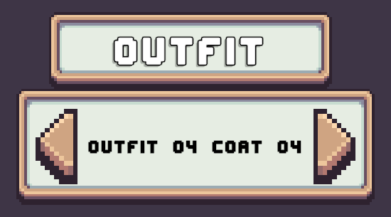

Carousel Layer Selector
A Carousel Layer Selector displays the currently selected layer option in the middle with left/right controls to the side used to cycle through other options available for the assigned layer.

Usage
The Carousel Layer Selector can be used in two ways.
- Use in a bulk setup alongside a set of other Carousel Layer Selectors.
- Use a single Carousel with a Tab Layer Selector.
Prefabs
Location: Prefabs > Character Creator > Modules > Layer Selectors > Carousel Selector.
Core Prefabs
Located in the Core subfolder.
Contains individual Carousel Layer Selector prefabs.
- Layer Carousel Selector – Base carousel selector.
- Layer Carousel Selector [+Randomize] – Includes a randomize button below the carousel.
- Layer Carousel Selector [+Title] – Includes a title above the carousel with the layer name.
- Layer Carousel Selector [-Background] - Basic carousel selector without a background.
These prefabs are not functional on their own.
Pre-Setup Prefabs
Located in the Pre-Setup subfolder.
These are bulk prefabs that contain multiple Carousel Layer Selectors.
Pre-setup prefabs already include a Character Layer Selection Manager.
These will work out of the box without any extra setup required.
- Carousel Selectors [Auto Create] – Instantiates carousel selectors at runtime. Uses a Grid Layout Group component to sort them.
- Carousel Selectors [Initialize Existing] – Uses carousel selectors already present in the prefab hierarchy.
Pre-Setup Tab
Located in the Pre-Setup Tab subfolder.
Pre-configured with the CCM Selected Layer Tab Handler component and ready to be used with Tab Layer Selectors.
Included prefabs:
- Carousel Layer Tab
Drag and drop a prefab into the Character Creation Menu and assign the Character Layer Selection Manager.
Limitations
- The Carousel Layer Selector only shows text. If you need visual previews, consider the Grid Layer Selector or List Layer Selector.